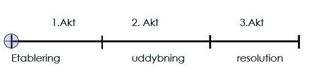

Basic Content:
I dette tema er vi blevet introduceret til indholds- og videoproduktion til web. Derudover har vi fået mulighed for at afprøve vores viden indenfor dette, og dermed web content, digital kommunikation, design af brugergrænseoverflade, samt responsivt webdesign, ved bl.a. at lave et redesign af en selvvalgt virksomhed. På content modulerne blev der især fokuseret på det tekniske og fortællermæssige, hvilket vi fil afprøvet ved af lave en reportagevideo samt en virksomhedsvideo. Under dette emne blev vi introduceret til videogenre, konceptudvikling, dramaturgi, interview-, optage- og redigeringsteknikker.
CHP:DOX
Denne opgave blev igen lavet i grupper og galt om at lave en video til CPH:DOX filmfestival.
I denne video skulle vi finde en person el. flere, som vi selv mente havde en spændnede historie at fortælle og som forholdte sig til et af de to temaer, som var demokrati og mennesket, hvor vores video faldt under emnet mennesket. Vi havde 2-3 minutter til at få histoiren fortalt i løbet af videoen og på en måde som skulle ramme folk, den skulle derudover både indeholde et interview, b-rolls samt et establishing shot som intro.
Proces:
For at gøre bedst muligt brug af tiden planlagde vi på forhånd spørgsmål, setup og hvilke b-rolls vi skulle have, så vi kunne bruge tiden mest effektivt under interviewet.
Dramatugi
For at formidle historie bedst sørgede vi for at få historien fortalt i en kronologisk orden, så man aldrig helt vidst hvad det næste der ville ske var.
Vi gjorde derfor også brug af tre akts modellen il at skabe vores historie. Dette gjorde ved i 1. akt af få situation etableret, som her var at det foregik under 2. verdenskrig. DErefter i 2. akt spidser situationen til, da vores hovedperosn blvier taget til fange sammen med sin far. Tilsidst tager situationen en ny drejning, da de slipper fri, hvilket også er med til af bane en vej for konfliktens løsning.
Under historein sker det første vendepunkt/point-of-attack, da han fortæller af de skulle tages til sverige men istedet blev snydt og ført tiltyskerne. Det 2. vendepunkt sker i det de blvier befiret igenog kan forenen med hans mor og søster til sidst.
 Noget andet der er med til atgøre det til en god historie er bl.a. at den har en form for identifikation for nogle, samt at den har noget uventet da den tager handlingen længere og er meget personlig, samt at der er en konflikt som skal løses i løbet af fortællingen.
Videoproduktion
I denne video, som er et interview er der primærtblevet gjort brug af normal perspektiv mens man ser han snakker, samtidig er der blevet sørget for at ham der bliver interviewet sidder forskudt for intervieweren, så der ikke bliver kigget ind i kameraet, samt af baggrund ikke er fortyrrende.
Samtidig er der under b-rolls primært blevet gjort brug af stationært kamera, men både i form af panningshots fx hen over hans billedebøger osv., men også tilting shots er der blevet gjort brug af ud fra et fuglepersprktiv, hvor man står bag ved ham og laver en form for over the shoulder.